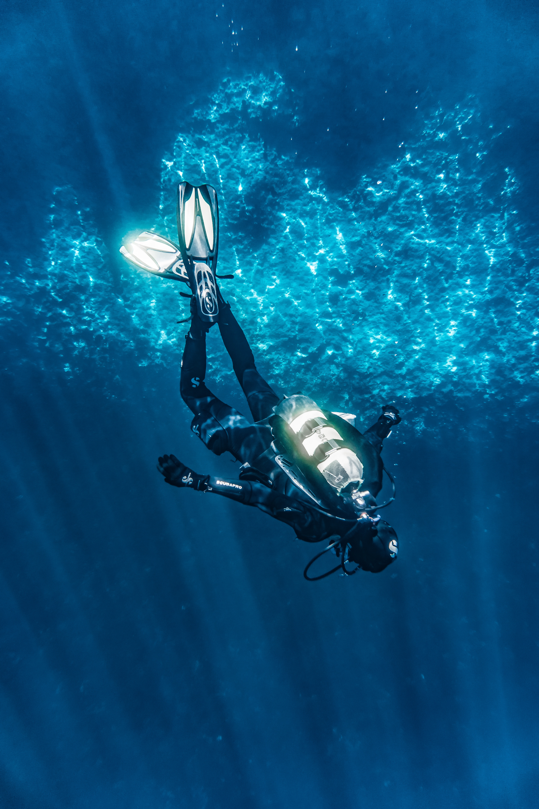

"How inappropriate to call this planet Earth, when clearly it is Ocean."
- Arthur C. Clarke
What is the Ocean really like? The ocean (also the sea or the world ocean) is the body of salt wat- er which covers approximately 71% of the surface of the Earth and contains 97% of Earth's water.
Another definition is that "any of the large bodies of water into which the great ocean is divided". Separate names are used to identify five different areas of the ocean: Pacific (the largest) Atlantic, Indian, Southern (Antarctic), and Arctic (the smallest).
The ocean is the principal component of Earth's hydrosphere, and therefore integral to life on Earth. Acting as a huge heat reservoir, the ocean influences climate and weather patterns, the carbon cycle, and the water cycle.
_____________ Ocean color is the branch of Ocean optics that specifically studies the color of the water and information that can be gained from looking at variations in color.
FEATURES
VIDEOS UPLOADED
ACTIVITIES
MARINE MIGRATION
HAVE YOU EVER WONDER HOW CAN WE - US HUMAN ENSURE THE SURVIVAL OF MIGRATORY SPECIES?
What's it all about?
Join youth host Sergio and lead scientist Dr. Anna Smith as they head
out on our first open ocean adventure to Cocos Island, in the Eastern
Tropical Pacific.
The Scalloped hammerhead sharks have been decimated in
this region because of their largest schools are easy targets for fishers.
Although the islands in the region are all protected, the waters between
these islands are not. With Migra Mar scientists and Conservation
International, we’re investigating critical habitats and pathways to
find out: How can we - us human ensure the survival of migratory species?

THE AQUARIUM ________________
HOW CAN WE TAKE A LITTLE AND LEAVE A LOT FOR NATURE?
What’s it all about?
Youth host Jordan invites you and Boris Worm to his Haíɫzaqv (Heiltsuk) homeland to take part in the harvest. Learn how the herring, the salmon, and the Haíɫzaqv people are interconnected in the rich ecosystem of British Colum- bia's Central Coast. This module celebrates the reciprocal relationship between the Haíɫzaqv and these keystone species — a relationship that’s over 14 000 years old ! Join the Haíɫzaqv and other researchers to study the cycles that connect land, sea, and learn how lessons of the past can guide us into a more sustainable future.
We are sincerely grateful to the Haíɫzaqv Nation for allowing Coatsline to be guests in their territory, for sharing their stories and knowledge, and for collaborating with us for this module. Coming Fall 2021!
WE’RE NOT DONE!
Coastline wants to continue to digitally transport youth from around the world into the water and onto the shores of the North Pacific. To make it happen, we need partners and funders.
READY FOR AN ADVENTURE ?
Join our team as they travel the world to bring you to the cutting edge of scientific discovery and social innovation.
... as they take a journey of disco- very, racing to find out what we can do to keep our ocean | as well as our own lives | healthy and safe. Together, we joined hand to find out:
+ How we can contribute to healthy ocean habitats.
+ The actions we can take to protect the Earth's ecosystems.
+ How we can ensure sustainable use of our marine resources.